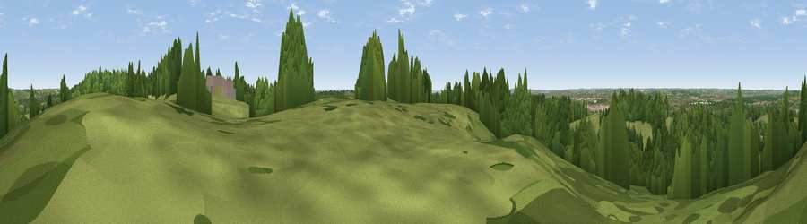

Viewpoint near Sewardstonebury
#37596 in England · top 11% of its area beats it · near Sewardstonebury · footpathWhere it is
The exact computed spot (TQ 39325 97025). Click the marker for map links.
Public access: a public right of way passes within 33 m of this spot. Computed from Natural England's CRoW access layer and OpenStreetMap rights of way — not the legal definitive map. Always verify locally.
The view, rendered

A 360° render of this exact spot computed from the terrain model, tree cover and land cover — summer colours, afternoon light, calibrated against photographs of famous viewpoints. Real trees, hedges and buildings will differ in detail.
The panorama
Grey silhouette: terrain skyline in each direction (720 bearings, Earth curvature and refraction included). Dashed green: skyline with trees (+15 m) and buildings (+8 m) as obstacles. Blue strip: how far the ground is visible on each bearing.
Where the view opens
Wedge length = distance to the farthest visible ground on that bearing (vegetation-aware). Rings at 10, 25 and 50 km.
What fills the view
44% woodland · 41% grassland · 10% built-up · 5% cropland
Angular shares of the visible panorama (visual magnitude), not map area. Landscape diversity 0.49 (0–1 Shannon).
Key numbers
More beautiful places nearby
The staircase of upgrades: each row has a higher view potential than everything closer. Driving times are estimates from straight-line distance, calibrated against real road routing — check an actual route before setting out.
| Place | Direction | Drive | Score |
|---|---|---|---|
| Viewpoint near Sewardstonebury | NE · 1 km | ~2 min | 32.4 |
| Viewpoint near Sewardstonebury | SSW · 2 km | ~6 min | 32.7 |
| Viewpoint near Wood Green | SW · 12 km | ~22 min | 35.9 |
| Viewpoint near East Finchley | SW · 14 km | ~26 min | 38.5 |
| Viewpoint near Great Warley | ESE · 19 km | ~33 min | 40.0 |
| Jury Hill | ESE · 24 km | ~39 min | 48.5 |
| Viewpoint near Horndon On The Hill | ESE · 30 km | ~47 min | 51.8 |
| Viewpoint near Vange | ESE · 34 km | ~52 min | 58.2 |
51.65475, 0.01266 · source: screening · position refined by local search. Computed location — check access rights before visiting.